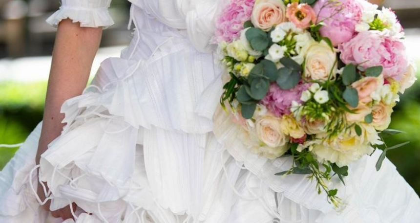

<!DOCTYPE html>
<html><!DOCTYPE html>
  <html lang="es">
    <head>
      <meta charset="UTF-8">
      <meta name="viewport" content="width=device-width, initial-scale=1.0">
      <title>Ecoactualizate</title>
      <link rel="shortcut icon" href="../assets/favicon.ico" type="image/x-icon">
      <link rel="preconnect" href="https://fonts.googleapis.com">
      <link rel="preconnect" href="https://fonts.gstatic.com" crossorigin>
      <link href="https://fonts.googleapis.com/css2?family=Montserrat:wght@200;300;400;500;600;700;800;900&amp;display=swap" rel="stylesheet">
      <meta http-equiv="X-UA-Compatible" content="IE=edge">
      <script defer src="../js/index.js" type="module"></script>
      <link rel="stylesheet" href="../css/noticias.css">
    </head>
  </html>
  <body>
    <!-- **************** Navbar **************** -->
        <section class="navbar-light">
              <div class="navbar-container container"><a class="branding" href="../">
                  <h3 class="h3 branding__title">Ecoactualizate</h3></a>
                    <button class="menu-toggler"></button>
                <nav class="nav-menu">
                  <ul>
                    <li><a class="link" href="../">Inicio</a></li>
                    <li><a class="link link--active" href="../actualizate/actualizate.html">Actualizate</a></li>
                    <li><a class="link" href="../noticias/noticias.html">Noticias</a></li>
                    <li><a class="link" href="../nosotros/nosotros.html">Nosotros</a></li>
                  </ul>
                  <div class="nav-menu__button"> <a class="btn btn-primary btn-md" href="../contribuir/contribuir.html">Contribuir</a></div>
                </nav>
              </div>
        </section>
    <!-- **************** Fin Navbar **************** -->
    <!-- ***************************** MAIN *****************************-->
    <main>
          <section class="noticia noticia--noticia">
                <div class="noticia-container container">
                  <div class="noticia__image"></div>
                  <div class="noticia-metadata noticia-metadata--noticia">
                    <div class="noticia-metadata__categoria noticia-metadata--noticia__categoria">
                      <p class="caption regular">Categoría</p>
                      <p class="body bold">Innovación, Reciclaje</p>
                    </div>
                    <div class="noticia-metadata__fecha-publicacion noticia-metadata--noticia__fecha-publicacion">
                      <p class="caption regular">Fecha publicación</p>
                      <p class="body bold">14 Ene 2021</p>
                    </div>
                    <div class="noticia-metadata--noticia__url" href="https://www.eltiempo.com/cultura/gente/vestido-de-novia-con-tapabocas-reciclados-reino-unido-605036">
                      <p class="caption regular">Fuente</p><a class="body bold" href="https://www.eltiempo.com/cultura/gente/vestido-de-novia-con-tapabocas-reciclados-reino-unido-605036">https://www.eltiempo.com/cultura/gente/vestido-de-novia-con-tapabocas-reciclados-reino-unido-605036</a>
                    </div>
                  </div>
                  <div class="noticia__content">
                    <h3 class="h3 semi-bold">Vestido de novia fue fabricado con 1500 tapabocas reciclados</h3>
                    <p class="body regular">Una creación del diseñador Tom Silverwood, en colaboración con ‘Hitched UK’, un portal dedicado a la asesoría de bodas, irrumpió en el mundo de la moda con un concepto bastante innovador.
            “Reciclamos 1.500 mascarillas faciales en este hermoso vestido de novia para celebrar el ‘día de la libertad’ el 19 de julio en el Reino Unido, cuando el encierro disminuye”, comentó el hombre en una publicación de Instagram.
            El diseñador compartió los bocetos en su cuenta de Instagram y afirmó que un miércoles diseñó la silueta básica del vestido y definió cuál sería el estilo.
            Al día siguiente, por la mañana, hizo la base en la que los tapabocas reciclados irían y, por la tarde, “jugué con el material y probé cómo se comportaría en el vestido”.
            Esa misma noche, empezó a unir cada elemento en largas tiras y las acomodó para que simularan un efecto de volantes en la prenda.
            El viernes por la mañana cosió más de 1.500 tapabocas de diferente manera para crear formas y texturas variadas. Esa misma tarde hizo el estudio fotográfico: “Llevamos el vestido gigante al centro de Londres y el increíble Dave Parry tomó algunas fotos asombrosas”, comentó.

            Y así, en cuestión de tres días, una idea llamativa y muy acorde a la coyuntura que atraviesa el planeta entero cobró vida.
            ‘Hitched’ cuenta que el diseñador se sintió motivado al conocer que los tapabocas son un elemento no reciclable y, de esta manera, quiso celebrar el regreso a las bodas presenciales y sin restricciones en el territorio inglés.
            </p>
                  </div>
                  <div class="noticia-btns noticia-btns--both"><a class="noticia-btns__left btn btn-lg btn-secondary" href="../noticias/noticia3.html">
                      <p class="body bold">Ir a la anterior</p></a><a class="noticia-btns__right btn btn-lg btn-secondary" href="../noticias/noticia5.html">
                      <p class="body bold">Ir a la siguiente</p></a></div>
                </div><a class="noticia__back-btn" href="../noticias/noticias.html"></a>
          </section>
    </main>
    <!-- ***************************** FIN MAIN ***************************** -->
    <!-- ***************************** FOOTER *****************************-->
    <footer>
            <section class="footer">
              <div class="footer-container container">
                <div class="footer-social">
                  <h3 class="h3 h3-upper extrabold">EL FUTURO NO ES DESECHABLE</h3>
                  <div class="footer-social__container"><a href="https://api.whatsapp.com/send?phone=3002047922"></a><a href="mailto:sofiatobon2020@gmail.com"></a></div>
                </div>
                <div class="footer-branding"><a class="footer-branding__container" href="#">
                    <p class="body bold">Ecoactualizate</p></a><a class="btn btn-primary btn-sm" href="../contribuir/contribuir.html">Contribuir</a></div>
              </div>
            </section>
    </footer>
    <!-- ***************************** FIN FOOTER ***************************** -->
  </body>
</html>